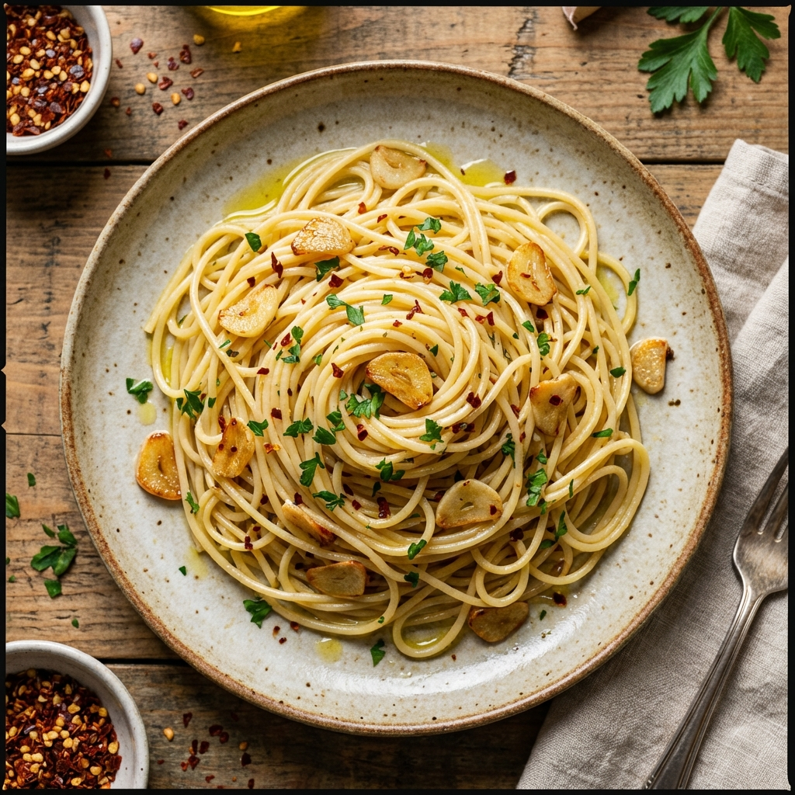

Popular
Aglio e Olio
준비
Prep
5 min
조리
Cook
15 min
인분
Servings
2
재료
Ingredients
- 스파게티 200g
- 마늘 6쪽 (얇게 슬라이스)
- 올리브 오일 1/2컵
- 페페론치노 (고추) 1-2개
- 파슬리 다진 것 2큰술
- 소금, 후추 적당량
- 파르메산 치즈 (선택사항)
- 200g Spaghetti
- 6 Garlic cloves (thinly sliced)
- 1/2 cup Olive oil
- 1-2 Red chili peppers
- 2 tbsp Fresh parsley (chopped)
- Salt and pepper to taste
- Parmesan cheese (optional)
조리법
Instructions
- 큰 냄비에 물을 끓이고 소금을 넣어 스파게티를 삶습니다.
- 팬에 올리브 오일을 두르고 약불에서 마늘을 천천히 볶습니다.
- 마늘이 황금빛이 되면 페페론치노를 넣고 향을 냅니다.
- 삶은 스파게티를 건져 팬에 넣고 면수 1/2컵을 추가합니다.
- 파슬리를 넣고 잘 섞어줍니다.
- 소금, 후추로 간을 맞추고 접시에 담아냅니다.
- 원하면 파르메산 치즈를 뿌려 완성합니다.
- Bring a large pot of salted water to boil and cook spaghetti according to package directions.
- In a large pan, heat olive oil over low heat and slowly cook garlic until fragrant.
- When garlic turns golden, add chili peppers and cook for 1 minute.
- Add cooked spaghetti to the pan along with 1/2 cup pasta water.
- Toss in fresh parsley and mix well.
- Season with salt and pepper, then transfer to plates.
- Top with parmesan cheese if desired and serve immediately.
'/%3E%3Ctext x='50%25' y='50%25' font-family='Arial, sans-serif' font-size='48' fill='white' text-anchor='middle' dominant-baseline='middle' opacity='0.7'%3ELasagna%3C/text%3E%3C/svg%3E)
Classic
Lasagna
준비
Prep
30 min
조리
Cook
60 min
인분
Servings
6-8
재료
Ingredients
- 라자냐 면 12장
- 소고기 간 것 500g
- 토마토 소스 800g
- 리코타 치즈 500g
- 모짜렐라 치즈 300g (갈아서)
- 파르메산 치즈 100g
- 양파 1개 (다진 것)
- 마늘 3쪽 (다진 것)
- 올리브 오일 2큰술
- 바질, 오레가노 각 1작은술
- 소금, 후추 적당량
- 12 Lasagna noodles
- 500g Ground beef
- 800g Tomato sauce
- 500g Ricotta cheese
- 300g Mozzarella cheese (shredded)
- 100g Parmesan cheese
- 1 Onion (diced)
- 3 Garlic cloves (minced)
- 2 tbsp Olive oil
- 1 tsp each Basil and oregano
- Salt and pepper to taste
조리법
Instructions
- 오븐을 180도로 예열합니다.
- 팬에 올리브 오일을 두르고 양파와 마늘을 볶습니다.
- 간 소고기를 넣고 갈색이 될 때까지 볶습니다.
- 토마토 소스, 바질, 오레가노를 넣고 20분간 끓입니다.
- 리코타 치즈에 계란 1개를 섞어 치즈 혼합물을 만듭니다.
- 베이킹 팬에 소스를 얇게 깔고 라자냐 면을 올립니다.
- 리코타 혼합물, 모짜렐라, 미트 소스 순으로 층을 만듭니다.
- 이 과정을 3-4번 반복합니다.
- 마지막에 파르메산 치즈를 뿌립니다.
- 호일로 덮고 40분간 굽습니다.
- 호일을 벗기고 15분 더 구워 치즈를 갈색으로 만듭니다.
- 10분간 식힌 후 서빙합니다.
- Preheat oven to 180°C (350°F).
- In a large pan, heat olive oil and sauté onion and garlic until softened.
- Add ground beef and cook until browned.
- Stir in tomato sauce, basil, and oregano. Simmer for 20 minutes.
- Mix ricotta cheese with 1 egg to create cheese mixture.
- Spread a thin layer of sauce in baking dish, then add lasagna noodles.
- Layer ricotta mixture, mozzarella, and meat sauce.
- Repeat layers 3-4 times.
- Top with parmesan cheese.
- Cover with foil and bake for 40 minutes.
- Remove foil and bake for 15 more minutes until cheese is golden.
- Let cool for 10 minutes before serving.